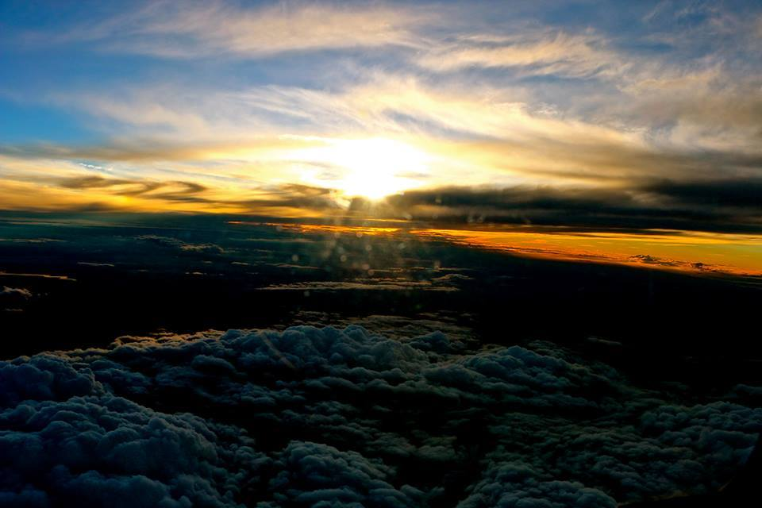

Sa zbori, sa urci avionul pana la nori, sa fii deasupra lumii este o pasiune care necesita seriozitate, incredere, siguranta de sine si placerea de a fi departe de casa. Iar studentii de la academia de aviatie stiu cel mai bine cum bate inima in aer.
Desi este de-a dreptul palpitant sa-ti traiesti viata la mii de metri departare de pamant, admiterea la scoala de aviatie de stat este “destul de grea”, dupa cum sustine unul dintre studenti. Cei care au de gand sa traiasca printre nori trebuie sa fie bine pregatiti la matematica, fizica si engleza pentru examenul de admitere care ii va imparti intre locurile bugetate si cele cu taxa. Media 7.5 iti poate ocupa un loc la scoala de aviatie, dar “pentru locul cu bursa trebuie sa tinzi undeva foarte aproape de zece”, spune Radu Canepescu, student la Scoala Superioara de Aviatie Civila.
“Sa se gandeasca daca asta este ceea ce ei vor sa faca. Probabil profesia le va aduce destula satisfactie. Ideal este sa te duci la serviciu cu placere”, mai crede tanarul care era sa omite un criteriu la fel de important: licenta medicala, care ii lasa la sol pe cei diagnosticati cu boli cronice, boli de inima si cu personalitate labila. Chiar si asa, sunt acceptate persoanele cu defecte mici de vedere. Ca sa zici ca in sfarsit poti fi admis la scoala de aviatie, trebuie sa treci si printr-un examen psihologic de cate patru ore in doua zile.
Sunt anual in jur de 20 de locuri dorite de peste 100 de absolventi de liceu, iar cei mai putin norocosi trebuie sa pregateasca 60.000 de euro pentru locurile de la taxa care, desi nelimitate, sunt ocupate de maximum patru sau cinci studenti anual. Pentru viitorii piloti, scoala incepe in luna ianuarie si se incheie in luna decembrie, fiind impartit intr-un semestru de cursuri teoretice si unul de cursuri practice. “Vacanta oficiala este de o luna pe an undeva in octombrie dupa zborurile de vara”, mai spune tanarul cursant.
Cursurile se pot face integrat sau pe etape, insa viitorii piloti trebuie sa adune in medie 200 de ore de zbor in anii de scoala pentru a obtine licentele de pilotaj: Private Pilot Licence (PPL) este valabila pentru avioane mici folosite in scop personal in timpul liber si nu permite zborul comercial, Commercial Pilot Licence (CPL) permite obtinerea banilor din zbor, dar impune si taxe la stat si Airline Transport Pilot Licence (ATPL), denumita “licenta suprema” care contine toate calificarile pentru a zbura un avion de pasageri.
Prima decolare fara instructor este cel mai asteptat moment de studentii scolii de aviatie. Pana acolo, studentii au de adunat macar 15 ore de zbor langa instructor. “Unii au iesit la simpla si dupa 50 de ore”, spune unul dintre cursanti despre colegii care se tin mai greu in aer.
Prima etapa de zbor are loc pe Aerodromul Strejnic de langa Ploiesti, aflat in administratia Scolii Superioare de Aviatie Civila, “pentru ca nu poti sa incurci traficul de la Baneasa tu care nu ai pus mana niciodata pe un avion”, a adaugat tanarul cursant care va purta ochelari de aviator.
Dupa ce instructorul crede ca micii piloti sunt pregatiti, le da voie sa zboare singuri. “Probabil e o senzatie unica pentru fiecare in parte”, crede unul dintre studenti, care isi aduce aminte de prima ridicare de la sol cu tur de pista, decolare, patru viraje si aterizare. Dar “senzatia unica” din avion se tranforma intr-un botez "intepator", un eveniment care sa iti aduca aminte cum te-ai facut pilot mare. “Se strange o gramada de maracini, apoi iti dai tricoul jos, te iau doi de maini si de picioare si te arunca in maracini. Numai te harjie un pic de ei, dar mi-era mai frica de asta decat sa zbor singur”, spune Radu, amuzat de momentul de la Ploiesti, in care "si-a primit aripile", dupa cum spun instructorii.
Botezul de initiere este urmat de zborurile in tara. De pe aerodromul de la Strejnic, proaspetii botezati decoleaza spre Urziceni si Mizil, iar mai tarziu aterizeaza si pe aeroporturile din Tulcea si Iasi. “Sigur, nu o sa te duci niciodata pe Otopeni”, spune unul dintre initiati. Ei au nevoie de minimum 750 de ore de teorie si in medie 200 de ore zbor ca sa-si finalizeze pasiunea de a deveni piloti.
Scoala de aviatie poate fi absolvita in mai putin de trei ani daca sunt parcurse orele necesare de instruire. Chiar si asa, absolventii trebuie sa intre rapid in profesie pentru ca licenta de pilot expira intr-un an de zile. Aceasta se reinnoieste anual prin evaluare teoretica, simulare pe avion si control medical.
Desi multi dintre ei sunt doriti de companiile straine, absolventii de pe locurile bugetate de la stat sunt obligati ca timp de cinci ani sa zboare pentru o companie romaneasca. Cei mai multi isi doresc sa piloteze avioanele de la TAROM datorita salariilor mari despre care se vorbeste si seriozitatea companiei. Acum vaneaza locuri de munca, pentru ca cererea pietei este ingusta.
Dar ca sa urce la cer, pilotii trebuie sa respecte timpul de odihna, sa nu consume bauturi alcoolice si nici unele medicamente, “inclusiv banalul Strepsils”, dupa cum il numesc studentii. Chiar si raceala este interzisa, pentru ca schimbarile de presiune ii afecteaza, iar in cazuri grave se ajunge la fisura de timpan.
Insa, dincolo de interdictii si, uneori, teama de prabusire, tinerii de la scolile de aviatie sunt fascinati cand ambaleaza motorul spre nori. Si asta pentru ca ei considera ca fac doar o meserie in care biroul se misca.